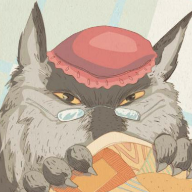

Érase una vez una niña llamada Caperucita Roja. Su madre le había hecho una pequeña capa roja, y como siempre la llevaba puesta, todos la llamaban Caperucita Roja.
Un día, su madre le pidió que llevara unos pasteles y una jarrita de mantequilla a su abuela, que vivía en una aldea al otro lado del bosque. Antes de partir, su madre le dijo:
- Caperucita Roja, no te entretengas en el bosque, no hables con extraños y no te apartes del camino.
Caperucita Roja prometió a su madre que tendría cuidado y se puso en marcha hacia la casa de su abuela.
El camino que atravesaba el bosque era hermoso y Caperucita Roja, que no tenía prisa, comenzó a recoger flores, a escuchar el canto de los pájaros y a disfrutar del paisaje. Mientras tanto, el lobo, que había visto a Caperucita Roja pasar, se acercó a ella y le preguntó:
- ¿A dónde vas, pequeña?
Caperucita Roja, que no sabía que era peligroso hablar con el lobo, le respondió:
- Voy a casa de mi abuela, para llevarle estos pasteles y esta jarrita de mantequilla.
El lobo, que era muy astuto, le dijo:
- ¿Y dónde vive tu abuela?
- Vive en la primera casa de la aldea, justo al otro lado del bosque - respondió Caperucita Roja.
El lobo pensó: "Esta niña será un manjar exquisito, más aún que su abuela". Entonces, acompañó a Caperucita Roja un trecho del camino y luego le dijo:
- Mira esas hermosas flores, ¿por qué no recoges algunas para tu abuela?

Caperucita Roja se desvió del camino y comenzó a recoger flores. Mientras tanto, el lobo corrió a la casa de la abuela y llamó a la puerta.
- ¿Quién es? - preguntó la abuela.
- Soy yo, Caperucita Roja - dijo el lobo, imitando la voz de la niña - Te traigo pasteles y mantequilla.
La abuela, que estaba enferma y en cama, respondió:
- La puerta está abierta, pasa, querida.

El lobo entró y, sin decir una palabra, se lanzó sobre la abuela y se la comió en un abrir y cerrar de ojos. Luego se puso su ropa, se metió en la cama y cerró las cortinas.
Poco después, Caperucita Roja llegó a la casa de su abuela. Tocó a la puerta y escuchó una voz ronca que decía:
- ¿Quién es?
Caperucita Roja, que sintió un poco de miedo al escuchar aquella voz, respondió:
- Soy yo, Caperucita Roja, te traigo pasteles y mantequilla.
- La puerta está abierta, pasa, querida - dijo el lobo, tratando de suavizar su voz.
Caperucita Roja entró y se acercó a la cama de su abuela. La encontró muy cambiada y le dijo:
- Abuelita, qué brazos tan grandes tienes.
- Son para abrazarte mejor, querida - respondió el lobo.
- Abuelita, qué orejas tan grandes tienes.
- Son para oírte mejor, querida - respondió el lobo.
- Abuelita, qué ojos tan grandes tienes.
- Son para verte mejor, querida - respondió el lobo.
- Abuelita, qué dientes tan grandes tienes.
- Son para comerte mejor - gritó el lobo, y saltó de la cama para devorar a Caperucita Roja...
Ahora usted, querido lector, tiene el poder de definir el rumbo de esta historia: